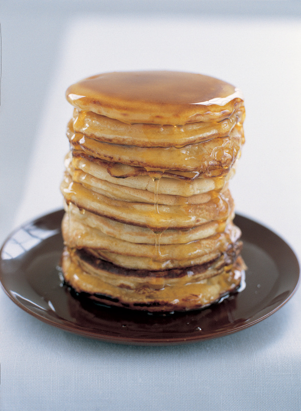

American Pancakes

These are those thick, spongy American pancakes that are often eaten with warm maple syrup and crisp fried bacon. I love them with the syrup alone, but if you do want bacon, I think streaky is best. You can easily cook these pancakes by dolloping the batter onto a hot griddle (smooth, not ridged, side) or heavy based pan.
Ingredients
Serves: 4-6
- 2½ teaspoons baking powder
- 1 pinch of salt
- 1 teaspoon granulated sugar
- 2 large eggs (beaten)
- 2 tablespoons butter (melted and cooled)
- 1¼ cups milk
- 1½ cups all-purpose flour
- butter for frying
Method
- The easiest way to make these is to put all the ingredients into a blender and blitz. But if you do mix up the batter by hand in a bowl, make a well in the flour, baking powder, salt and sugar, beat in the eggs, melted butter and milk, and transfer to a jug: it's much easier to pour the batter into the pan than to spoon it.
- Heat a smooth griddle or pan on the stove.
- When you cook the pancakes, all you need to remember is that when the upper side of the pancake is blistering and bubbling it's time to cook the second side, and this needs only about 1 minute, if that.
- I get about 16 silver-dollar-sized pancakes out of this.